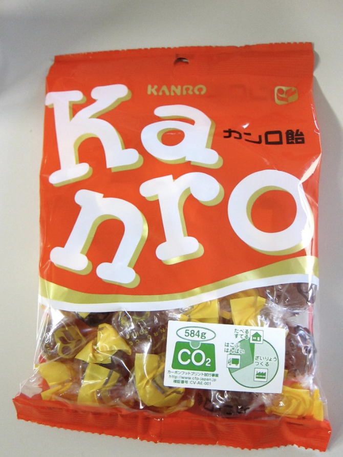

Embodied carbon labels on products
Two trends suggest that embodied carbon labels will become widespread in the next five to seven years.
First, as the science of climate change has matured, we’ve started to develop better tools for estimating carbon footprints and Lifecycle Assessments (LCAs) to quantify climate impact. The number of organizations providing these has proliferated, and the U.S. Department of Energy (DOE) and other programs increasingly require LCAs to be included in research efforts. The ease of estimating greenhouse gas emissions is increasing, although standardization is desperately needed!
It’s coming. "Carbon footprint" by Kevin Dooley
Second, consumers, especially Millennials and younger generations, are increasingly aware of the climate impact of their purchases and say they want brands that embrace sustainability. While the intention-action gap is, unfortunately, a real thing (I’m certainly guilty of this), the good news is that research on consumer behavior is helping identify strategies to help. One of these is using labeling to prompt consumers.
The EnergyStar program is a great example of this strategy. The program was launched jointly by the U.S. EPA and DOE in 1992 as a voluntary labeling program to identify and promote energy-efficient products. Over the program’s lifetime, EnergyStar is estimated to have saved 5 trillion kilowatt-hours of electricity, avoided $450 billion in energy costs, and achieved 4 billion tonnes of GHG reductions.
We are already seeing companies adopting “carbon nutrition labels” for branding purposes. In 2021, United began listing CO2 emissions for each flight on their website. Several organizations offer their own low carbon labeling. In the next five years, expect to see this become more widespread and standardized!

Photo by Hanson Lu